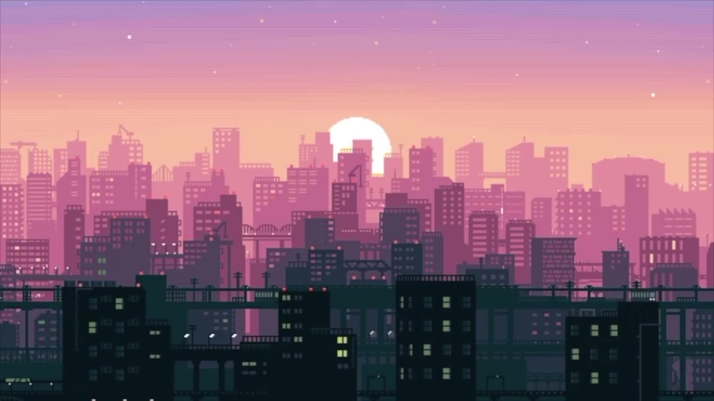

Lofi Donut Shop Audio Visualizer
Anything but your average in-your-face audio visualizer that has flashing colors, screen shake, and EDM. Instead, relax to chill lofi beats with this accompanying donut shop scene that reacts to the music in a pleasing way. Fine tune all the effects in the scene to create your perfect lofi paradise.